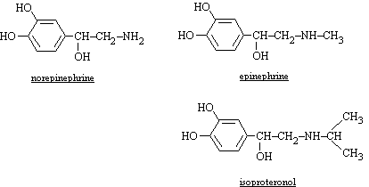
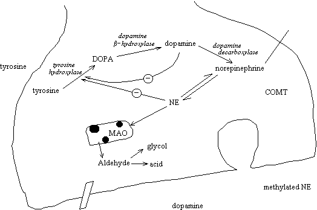

| Vm = | RT | ln | [co] |
| zF | [ci] |
The potential of Na+ is +59 mV (assuming 142 mM outside and 14 mM inside), indicating the free energy favors inward rectification. The potential of K+ is −91 mV, indicating free energy toward outward rectification.
| Gastrin | |
|---|---|
| Structure | peptide |
| Tissue/Organ Source(s) | |
| Tissue/Organ Target(s) and Effects | |
| Bombesin | |
| Structure | peptide |
| Tissue/Organ Source(s) | Both a neurotransmitter and neuromodulator secreted by neurons in the nucleus of the solitary tract (NTS) and the dorsal motor nucleus of the vagus nerve (DMV). |
| Tissue/Organ Target(s) and Effects | Has important autonomic (cardiovascular) and behavioral effects (satiety at meals) |
| Insulin | |
| Structure | peptide |
| Tissue/Organ Source(s) | β cells in islets of Langerhans of pancreas |
| Tissue/Organ Target(s) and Effects |
|
| Secretin | |
| Structure | peptide |
| Tissue/Organ Source(s) | |
| Tissue/Organ Target(s) and Effects | Bicarbonate ion is produced and released for stomach acid neutralization |
| Bradykinin | |
| Structure | nonapeptide |
| Tissue/Organ Source(s) | |
| Tissue/Organ Target(s) and Effects | induces vascular smooth muscle relaxation; natural antihypertensive
two GPC receptors (B1, B2) identified which may activate NOS and prostaglandin synthesis |
| Cholecystokinin | |
| Structure | peptide |
| Tissue/Organ Source(s) | |
| Tissue/Organ Target(s) and Effects | Gall bladder: stimulation of smooth muscle surrounding organ to release bile to duodenum |
| Gastric Inhibitory Peptide (GIP) | |
| Structure | peptide |
| Tissue/Organ Source(s) | |
| Tissue/Organ Target(s) and Effects | Gastric chief cells: inhibition of acid (HCl) secretion |
| Somatostatin | |
| Structure | peptide |
| Tissue/Organ Source(s) | δ cells of islets in pancreas |
| Tissue/Organ Target(s) and Effects | All tissues and organs stimulated by insulin and/or glucagon: returns tissue to resting state so that neither insulin or glucagon effects continue |
| Thyroxine (T4) | |
| Structure | peptide |
| Tissue/Organ Source(s) | Thyroid medulla
hormone has special carrier protein thyroglobulin |
| Tissue/Organ Target(s) and Effects | T4 receptor is nonhistone nuclear protein |
| Triiodothyronine (T3) | |
| Structure | peptide |
| Tissue/Organ Source(s) | Thyroid medulla
hormone has special carrier protein thyroglobulin |
| Tissue/Organ Target(s) and Effects | T4 receptor is nonhistone nuclear protein |
| Parathyroid Hormone (PTH) | |
| Structure | peptide |
| Tissue/Organ Source(s) | parathyroid gland |
| Tissue/Organ Target(s) and Effects | Purpose is to increase serum calcium
through following actions
|
| Calcitonin | |
| Structure | peptide |
| Tissue/Organ Source(s) | parathyroid gland |
| Tissue/Organ Target(s) and Effects | Purpose is to decrease serum calcium
through following actions
|
| Vasopressin | |
| Structure | peptide |
| Tissue/Organ Source(s) | pituitary neurohypophysis |
| Tissue/Organ Target(s) and Effects | Purpose is to compensate for total extracellular fluid volume depletion by increasing blood pressure and alter kidney function for retaining fluid |
| Oxytocin | |
| Structure | peptide |
| Tissue/Organ Source(s) | pituitary neurohypophysis |
| Tissue/Organ Target(s) and Effects |
|
| Estradiol | |
| Structure | steroid |
| Tissue/Organ Source(s) | Theca cells of ovary |
| Tissue/Organ Target(s) and Effects | Uterine endometrium: buildup of mucosa for implantation of embryo |
| Progesterone | |
| Structure | steroid |
| Tissue/Organ Source(s) | Theca cells of ovary |
| Tissue/Organ Target(s) and Effects | Uterine endometrium: maintenance of mucosa for embryo development |
| Testosterone | |
| Structure | steroid |
| Tissue/Organ Source(s) | Leydig cells of testis |
| Tissue/Organ Target(s) and Effects | |
| Adrenocorticotrophic Hormone (ACTH) | |
| Structure | peptide |
| Tissue/Organ Source(s) | pituitary adenohypophysis
release controlled by corticotropin release factor (CRF) from hypothalamus |
| Tissue/Organ Target(s) and Effects | Adrenal cortex: stimulation of adrenal cortical hormone
production Hormones produced from adrenal cortex include glucocorticoids and mineralocorticoids |
| Growth Hormone (GH) | |
| Structure | peptide |
| Tissue/Organ Source(s) | pituitary adenohypophysis
release controlled by growth hormone release factor (GRF) and growth hormone inhibitory factor (GRIF) from hypothalamus |
| Tissue/Organ Target(s) and Effects | |
| Thyrotropin | |
| Structure | peptide |
| Tissue/Organ Source(s) | pituitary adenohypophysis
release controlled by thyrotropin release factor (TRF) from hypothalamus |
| Tissue/Organ Target(s) and Effects | Thyroid gland: stimulates target gland to produce thyroid hormones T4 and T3. |
| Follicle Stimulating Hormone (FSH) | |
| Structure | peptide |
| Tissue/Organ Source(s) | pituitary adenohypophysis
release controlled by gonadotropin release factor (GnRF) from hypothalamus |
| Tissue/Organ Target(s) and Effects | In females, FSH stimulates maturation of the thecal cells in
the ovarian follicle, which cells in turn will begin to produce
estrogen
In males, FSH induces stem cell proliferation in the testis and the Leydig cells to produce and secrete testosterone |
| Luteinizing Hormone (LH) | |
| Structure | peptide |
| Tissue/Organ Source(s) | pituitary adenohypophysis
release controlled by gonadotropin release factor (GnRF) from hypothalamus |
| Tissue/Organ Target(s) and Effects | In females, LH stimulates further maturation of the follicle
after ovulation to become the corpus luteum, which
will begin to produce progesterone
In males, LH induces maturation of spermatocytes to spermatozoa |
The interaction of cyclic nucleotides, their synthesizers and their hydrolases, make simplistic models regarding how metabolism is altered impossible.
PKG can be activated directly by cAMP as well if cyclic nucleotide levels are extremely high. This actually becomes inportant in terms of how NO levels contribute either to the cAMP- or cGMP-dependent pathways (see Nitric Oxide).
Nine (9) isozymes of PDE are known. There is generally significant sequence homology, and some proteins may be generated from transcript alternative splicing. Type III PDE in adipocytes is activated by PKA phosphorylation, and in platelets it is phosphorylated (and activated?). In bronchiolar smooth muscle PKA activation actually inhibits type III PDE.
Types III and IV PDE target cAMP directly, and type V in lung, vascular and bronchiolar smooth muscle is specific for cGMP. Type I hydrolyzes both cAMP and cGMP and is regulated by calcium (binds to Ca2+/calmodulin for activation). Type II PDE is stimulated by levels of cGMP, while type III is inhibited by cGMP. Type VI is apparently specific for photoreception and anchored to membranes via an isoprenylation, and type VII has been found to be rolipram-insensitive. Very specific inhibitors exist for all types except Types VIII and IX (only recently sequenced).
PIP2 can be phosphorylated on the membrane to phosphatidylinositol-3,4,5-trisphosphate (PIP3), by the phosphatidylinositol 3-kinase (PI3K). In particular PIP3 accumulates when protein tyrosine kinases are activated; its presence modulates activities of effector such as the G protein Rac and the Ser/Thr protein kinase B (Akt). PIP2 also binds to pleckstrin homology domain, allowing it to dock with proteins having the PH domain.
The PH domain is found in amino terminus of β-, γ, and δ-types. This binds to polyphosphoinositides of all kinds, and this presumably allows these polyphosphoinositides to regulate PLC activity. Some PLC forms are catalytically inactive, resulting from splice variants where the important X domain is altered. It is not known entirely if there is a useful function: one isoform binds IP3 and may inhibit the latter's interaction with ryanodine receptors.
Three-dimensional structures for a PLC-δ1 mutant lacking the PH domain and a structure of the PH domain itself have been determined. Four domains are revealed:
All forms of PLC are Ca2+-dependent. Both structure and mutation studies reveal residues involved in Ca-binding, substrate recognition and catalysis. Lys438, Ser522, and Arg549 of rat PLC-δ1 are involved in hydrolysis; replacing Lys440 affected only PIP2 hydrolysis.
The C2 domain may be important in the Ca2+-mediate binding of the enzyme to membrane acidic phospholipids. PLC-δ1 C2 domain may promote formation of enzyme-PtdSer-Ca2+. PLC-β C2 domain has no affinity for membrane bilayers when calcium is present; it does interact with activated α subunits of Gq proteins.
EF hands typically bind calcium too (some variants do not). However in PLC, it may just be a flexible link between PH domain and the rest of the protein. Other evidence indicates EF-hand does bind Ca2+ and this is necessary to mediate interaction between PH and PIP2.
PLC-β1 and β2 do not bind membranes via their C2 domain. This domain binds nonhydrolyzable GTP-γ-S-activated Gαq (Kd = 18 nM) and with GDP-bound Gαq but with lower affinity (Kd = 120 nM for β1), but does not bind GTP-γ-S-activated Gαi.
Source: S. G. Rhee (2001) Ann. Rev. Biochem. 70, 281. Regulation of Phosphoinositide-Specific Phospholipase C.
nNOS predominates in cholinergic cells, epithelial cells, and the ciliated epithelium of the respiratory system. iNOS can be found expressed in macrophages and eosinophils, in epithelium of asthmatics, and when an immune or inflammatory process is occurring.
All the tetrahydrobiopterin-dependent NOS requires oxygen (O2) as a substrate or are dependent upon oxygen, which ultimately provides atoms for the NO free radical product.
At low levesl the product NO activates guanyl cyclases, which convert GTP to cGMP. Guanylate cyclase comes in two forms, a membrane-bound particulate type (pGC), and a cytosolic form (sGC). NO activates sGC while pGC is activated through GPCRs for natriuretic peptides (atrial, brain, and c-) and by VIP. Activation of sGC by NO involves heme group binding, although there is some question that it may act through another system, such as thiol modificiation, either in an active site or in an important structural change causing conformational shift. Proteins with thiol or active metal centers should be considered legitimate targets for NO.
At higher intracellular levels (> 1 mM), NO can activate PKA, can produce a nitrosperoxide (ONOO−) and cause ADP-ribosylation. Sustained high or chronic levels of NO increases cAMP-dependent pathways while reducing the effect of cGMP-dependent stimulation. In smooth muscle cGMP-dependent activation would lead to reduction of intracellular calcium (through inhibiting L-type Ca2+ channels and altering proteins crucial to the contractile process) and therefore relaxation.
NO also controls gene expression. It can activate transcription factors such as NF-κB and activation protein-1 (AP-1). NF-κB is also signalled by p21ras, and AP-1 activity may also be directly cGMP-dependent (NO activates cGMP formation as well).
Receptors functioning as ion channels do not need and do not likely participate in second messenger signalling. The nicotinic acetylcholine receptors, one type of serotonin receptor, two types of dopamine receptors, and some monoamine and amino acid receptors are all ion channels, and if they induce any signalling at all, it’s as perhaps a side effect of ion movement.
Some receptors acquire an enzymatic activity upon ligand binding. The insulin and many other peptide growth factor receptors become phosphorylated and acquire an active tyrosine phosphotransferase (protein kinase) ability, through which they affect intracellular metabolism.
Other receptors couple to membrane protein assemblies and activate enzymatic activities in quiescent membrane-bound proteins, or cause cytosolic proteins or substances to become membrane-bound and, more importantly, activated.
G protein-coupled receptors (GPCRs) have several common characteristics.
Cholinergic receptors are probably the most abundant in terms of where they are found in the CNS and PNS. Acetylcholine is the neurotransmitter of choice in the preganglionic neurons of both the sympathetic and parasympathetic systems and in the postganglionic neurons of the parasympathetic system. Cholinergic receptors must therefore be located on the postsynaptic membranes to elicit continued nerve transmission.
Cholinergic receptors are subdivided into two types: nicotinic and muscarinic. Acetylcholine is the physiological agonist which can occupy both receptors under certain conditions. The nicotinic receptor is found in striated (skeletal) muscle innervations, autonomic ganglia, and the central nervous system (see table). Nicotine is the specific agonist for stimulating this receptor class, afterward blocking further stimulation of this receptor. The antagonists are typically d-tubocurarine, which blocks the nicotinic cholinergic receptors in the skeletal muscle and autonomic ganglia, and hexamethonium, which principally blocks the receptors in the autonomic ganglia. The muscarinic receptor is characterized by multiple subtypes, M1 through M5, which also have different affinities for different drugs. These receptors are activated by muscarine and the antagonist of choice for these receptors is atropine. The M1 receptor is found primarily in the autonomic ganglia and CNS. The M1 receptor may mediate its effect through G proteins to phospholipase C. The M2 receptor is found at the terminal arborizations in the end organ and in the CNS (see table); it may largely mediate its effect via G proteins to adenyl cyclase and on to cAMP.
α-Latrotoxin is a poison released by black widow spiders that appears to induce a massive release of ACh. It may do this by acting as a Ca2+ ionophore. Botulinum toxin from Clostridium botulinum probably works by inhibiting the release of ACh at all.
Metacholine is an esterase-resistant compound with high specificity for M3 receptors, a type in abundance in smooth muscle; metacholine at high concentrations occupies M2 receptors as well. M3 receptors associate with Gq receptors which activate phospholipase C (PLC) hydrolyzing PIP2 to generate IP3: the generation of IP3 to mobilize Ca2+ and the action of protein kinase C (PKC) both contribute strongly to contraction. M2 receptors are typically in presynaptic parasympathetic end terminals, whose function is to modulate cholinergic release, but these are also found in smooth muscle too. M4 have been identified only in rabbit alveolar walls in the lung, and not in other species. M2 absolutely couples to Gi to inhibit or counteract activation of adenyl cyclase. In this way it may compete with β-adrenergic coupling to Gs to activate adenyl cyclase in the same cell. In smooth muscle, elevated cAMP is associated with smooth muscle relaxation, reduced cAMP combined with elevated calcium is associated with contraction.
| Muscarinic | Nicotinic | ||||||
|---|---|---|---|---|---|---|---|
| M1 | M2 | M3 | M4 | M5 | N1 | N2 | |
| Distribution | striatum, hippocampus, cortex | heart, hindbrain, cerebellum | exocrine glands, GI tract | neostriatum | substantia nigra | striated (skeletal) muscle | adrenal medulla, autonomic ganglia |
| Agonists | acetylcholine | ||||||
| muscarine | nicotine | ||||||
| xanomeline, CDD-0097 | |||||||
| Antagonists | atropine | hexamethonium d-tubocurarine | |||||
| pirenzepine | AF-DX 116 | pF-HHSiD | |||||
| Signalling System | Gαq/11 phospholipase Cb |
Gαi/o adenyl cyclase inhibitor |
Gαq/11 phospholipase Cb |
Gαi/o adenyl cyclase inhibitor |
Gαq/11 phospholipase Cb |
ion channel | ion channel |
Receptors for these neurotransmitters also come in two classes: α-adrenergic and β-adrenergic. These receptor classes are further subdivided into particular classes showing different affinities for the different catecholamines and drugs which bind them.
At least three types of β-receptors are identified. β1 is abundant in heart and intestine, β2 is in smooth muscle, and β3 in adipose tissue (its has only 50% homology with β1 and β2.
The table below illustrates some aspects of adrenergic receptors.
| Receptor | Molecular Biology (Mechanism) | Usual Sites | Agonist | Antagonist |
|---|---|---|---|---|
| α | epinephrine > norepinephrine > isoproteronol | phentolamine, phenoxybenzamine | ||
| α1 | stimulation of phosphoinositide cascade (calcium mobilization, PKC activation) through binding to Gαs | postsynaptic: blood vessels, eye radial muscle; GI tract | ||
| pre- & postsynaptic: all inhibitory; isoproteronol is ineffective | ||||
| α2 | inhibition of adenyl cyclase activity through binding to Gαi | presynaptic: adrenergic & cholinergic nerve terminals; inhibits release of transmitter | ||
| postsynaptic: blood vessels and CNS | ||||
| β | ||||
| β1 | β1R couples to Gi to inhibit adenyl cyclase, promotes contraction | heart and intestine | isoproteronol > epinephrine, norepinephrine | propanolol |
| β2 | couples to Gs to activate adenyl cyclase and promote relaxation | bronchiolar & vascular smooth muscle | isoproteronol > epinephrine >> norepinephrine | |


Certain drugs affect (block) certain subtypes. Sumatriptan blocks 5HT1B/1D and show anti-migraine activity. Buspirone blocks 5HT1A and appears to be an anxiolytic. Olanzapine shows anti-psychotic activity and block 5HT2. Cisapride blocks 5HT4 and nocturnal heartburn. And clozapine appears to have mixed receptor activity and is used in the treatment of schizophrenia.
Glutamate binds to fast excitatory receptors. One kind is a metabotrophic G protein-coupled receptor involved in neuronal development and plasticity. Another kind is ionotrophic, of which there are two subtypes:
NMDA GluR also has a Mg2+-binding site which blocks the channel at resting potential. Release of binding occurs with deplorization to −30 mV (usually induced by AMPA, kainate, or other receptor interaction. This opening is inhibted by about Zn2+. NMDA GluRs may mediate cell death as a result of Glu overstimulation, Ca2+ influx, and an action taken by nitric oxide synthesis. Ketamine and phencyclidine are antagonists occupying the open channel. Other antagonists include felbamate [Felbetol] (anti-epileptic) and riluzole [Rilutek], an agent used in amyotrophic lateral sclerosis. Other general anesthetics and alcohol affect the ability of Glu to interact with its receptor.
The GABAB receptor is G protein-coupled which specific is bound by baclofen (a muscle relaxant).
The GABAA receptor is a chloride ion channel inducing IPSP upon binding. It is a pentameric protein whose subunits traverse the membrane only 4 times. Specific agonists include muscamol (no clinical use). Specific antagonists include picrotoxin, which has analeptic (convulsant) action. Benzodiazepines faciliate the action of GABA in channel opening and are not direct agonists; they can be direct antagonists however by working to close chloride channels (inverse agonism). Flumazenil (Maxicon) is an antagonist and anti-inverse agonist and used in benzodiazepine overdose.. Barbituates can open chloride channels in absence of GABA if levels high enough. Many drugs work via the effect they exert on GABAAR: diazepam (Valium), alprazolam (Xanax), temazepam (Restoril).
The GlyR is a ligand-gated chloride channel which produces IPSPs. Strychnine is an antagonist of GlyR.
| Agent | Use/Indication | Chemical Structure/Properties | ||||||||||||||||||||||||||||||||||||
|---|---|---|---|---|---|---|---|---|---|---|---|---|---|---|---|---|---|---|---|---|---|---|---|---|---|---|---|---|---|---|---|---|---|---|---|---|---|---|
| acetazolamide | carbonic anhydrase inhibitor | N-[5-(aminosulfonyl)-1,3,4-thiadiazol-2-yl] acetamide (C4H6N4O3S2) | ||||||||||||||||||||||||||||||||||||
| allopurinol | xanthine oxidase inhibitor | hypoxanthine isomer | ||||||||||||||||||||||||||||||||||||
| carbamazepine | anticonvulsant
analgesic anti-epileptic |
5H-dibenz[b,f]azepin-5-carboxamide (C15H12N2O) | ||||||||||||||||||||||||||||||||||||
| chlorothiazide | thiazide-class diuretic used in hypertension & edema | |||||||||||||||||||||||||||||||||||||
| clonazepam | anticonvulsant | 5-(o-chlorophenyl)-1,3-dihydro-7-nitro-2H-1,4-benzodiazepin-2-one (C15H10ClN3O3) | ||||||||||||||||||||||||||||||||||||
| curare
(tubocurarine) |
7´,12´-dihydroxy-6,6´-dimethoxy-2,2´,2´-trimethyltubocurare (C37H41ClN2O6) | |||||||||||||||||||||||||||||||||||||
| cyclophosphamide | cytotoxic alkylating agent | |||||||||||||||||||||||||||||||||||||
| cytarabine | deoxycytidine analogue
antineoplastic |
cytosine arabinoside | ||||||||||||||||||||||||||||||||||||
| carazolol | β2 antagonism | |||||||||||||||||||||||||||||||||||||
| diazepam | ||||||||||||||||||||||||||||||||||||||
| diphenylhydantoin | anticonvulsant
cardiac depressant |
5,5-diphenyl-2,4-imidazolidinedione (C15H22N2NaO2) | ||||||||||||||||||||||||||||||||||||
| droperidol | ||||||||||||||||||||||||||||||||||||||
| edrophonium | anticholinesterase | |||||||||||||||||||||||||||||||||||||
| ethacrynic acid | powerful, short-duration diuretic | |||||||||||||||||||||||||||||||||||||
| ethosuximide | anticonvulsant for petit mal epilepsy |
3-ethyl-3-methyl-2,5-pyrrolidinedione (C7H11NO2) | ||||||||||||||||||||||||||||||||||||
| hexamethonium | ganglionic blocking agent | N,N,N,N´,N´,N´-hexamethyl-1,6-hexanediaminium
(C10H24N2) | ||||||||||||||||||||||||||||||||||||
| mannitol | ||||||||||||||||||||||||||||||||||||||
| meprobamate | ||||||||||||||||||||||||||||||||||||||
| methotrexate | folic acid blocker | N-[4-[[(2,4-diamino-6-pteridinyl)methyl]methylamino]benzoyl]-l-glutamic acid (C20H22N8O5) | ||||||||||||||||||||||||||||||||||||
| phenobarbital | long-duration tranquilizer | see barbituates | ||||||||||||||||||||||||||||||||||||
| phenoxybenzamine | potent α-adrenergic blocker
anti-hypertensive |
N-(2-chloroethyl)-N-(1-methyl-2-phenoxyethyl)benzenemethanamine (C18H22ClNO) | ||||||||||||||||||||||||||||||||||||
| phentolamine | anti-α-adrenergic | 3-[[(4,5-dihydro-1H-imidazol-2-yl)methyl](4-methylphenyl)amino]phenol (C17H19N3O) | ||||||||||||||||||||||||||||||||||||
| prednisone | ||||||||||||||||||||||||||||||||||||||
| primidone | ||||||||||||||||||||||||||||||||||||||
| propanolol | β-adrenergic blocker
decreases cardiac rate and output reduces blood pressure |
1-[(1-methylethyl)amino]-3-(1-naphthalenyloxy)-2-propanol
(C16H21NO2) | ||||||||||||||||||||||||||||||||||||
| scopolamine | ||||||||||||||||||||||||||||||||||||||
| succinylcholine | ||||||||||||||||||||||||||||||||||||||
| valproate | 2-propylpentanoic acid | |||||||||||||||||||||||||||||||||||||
| vinblastine | ||||||||||||||||||||||||||||||||||||||
| vincristine | ||||||||||||||||||||||||||||||||||||||
| acebutolol | β-blocker, but has mild sympathomimetic activity. block β1 more than β2 | |||||||||||||||||||||||||||||||||||||
| labetalol | β- and α1-blocker | |||||||||||||||||||||||||||||||||||||
| metoprolol | selective β1 blocker | |||||||||||||||||||||||||||||||||||||
| atenolol | selective β1 antagonist, an antihypertensive | |||||||||||||||||||||||||||||||||||||
| albuterol | selective β2 antagonist, an anti-asthmatic | |||||||||||||||||||||||||||||||||||||
| doxazosin | α antagonist, prostate hypertrophy | |||||||||||||||||||||||||||||||||||||
| salmeterol | selective β2 antagonist, an anti-asthmatic | |||||||||||||||||||||||||||||||||||||
| carvedilol | α1, β1, β2 antagonist, congestive heart failure | |||||||||||||||||||||||||||||||||||||
| carbachol | nicotinic and muscarinic agonist of long duration since it resists hydrolysis by esterases | carbamylcholine | ||||||||||||||||||||||||||||||||||||
| bethanechol | muscarinic; resists hydrolysis as it resembles methacholine and carbachol | |||||||||||||||||||||||||||||||||||||
| pilocarpine | tertiary amine alkaloid similar to methacholine in its pharmacology | |||||||||||||||||||||||||||||||||||||
| metaclopramide | stimulates upper GI motility | |||||||||||||||||||||||||||||||||||||
| physostigmine | anticholinesterase; prolongs ACh action | |||||||||||||||||||||||||||||||||||||
| neostigmine | a synthetic quaternary amine anticholinesterase | |||||||||||||||||||||||||||||||||||||
| edrophonium | similar to neostigmine in effect | other physostigmine-like anti-esterases include pyridostigmine, ambenonium, demecarium | ||||||||||||||||||||||||||||||||||||
| organophosphates | include DFP, echothiopate, parathion | |||||||||||||||||||||||||||||||||||||
| atropine | cholinergic antagonist in the CNS; high concentrations inhibit cholinergic action at ganglionic synapses and motor nerve endings | |||||||||||||||||||||||||||||||||||||
| ipratropium | quaternary muscarinic antagonist | very much like atropine; quaternary alkaloids do not cross blood-brain barrier | ||||||||||||||||||||||||||||||||||||
| tiotropium | quaternary muscarinic antagonist used in bronchodilation | similar to ipratroprium | ||||||||||||||||||||||||||||||||||||
| darifenacin | M2 antagonist used in promoting urinary retention | |||||||||||||||||||||||||||||||||||||
| dopamine | β-agonist in CNS; induces release of norepinephrine; can act on a receptors at high levels | |||||||||||||||||||||||||||||||||||||
| dobutamine | direct β-agonist; no effect on dopaminergic receptors | structurally resembles dopamine | ||||||||||||||||||||||||||||||||||||
| phenylephrine | has similar effect to norepinephrine but less potent and is longer-acting | |||||||||||||||||||||||||||||||||||||
| ephedrine | a mixed sympathomimetic inducing release of norepinephrine | |||||||||||||||||||||||||||||||||||||
| methamphetamine | α agonist with little CNS action | |||||||||||||||||||||||||||||||||||||
| metaraminol | similar to NorEpi in effect but less potent | |||||||||||||||||||||||||||||||||||||
| timolol | nonselective β-adrenergic antagonist which is
5-10 X more potent than propanolol
used in therapy of glaucoma and hypertension |
|||||||||||||||||||||||||||||||||||||
| nadolol | β-blokcer with effects of propanolol but not metabolized | |||||||||||||||||||||||||||||||||||||
| isoproteronol | mostly a β-agonist with little effect on α receptors. multiple effects | |||||||||||||||||||||||||||||||||||||
| barbituates |
| |||||||||||||||||||||||||||||||||||||
It is composed of the caudate (“having a tail”), the putamen (“shell-shaped”), and the globus pallidus (“pale body”). A connection of cells between the caudate and putamen are darkened due to chromaffin cell-like appearance, and so the structure is also called the corpus striatum. Comparatively, the corpus striatum makes its first appearance in the reptilian brain (it is also called the neostriatum), and the structure becomes more elaborate in the mammalian brain.
Neurons in the ventral part of the striatum and cells in the central and dorsal areas of the caudate-putamen all appear to be projection neurons and immunoreactively show the presence of tyrosine hydroxylase (TH)1.
GABAergic neurons make up most (9 in 10) of the neurons of the striatum and have spiny dendrites and project to many areas outside the striatum. The balance of neurons are cholinergic and extend no dendritic processes and likely serve as interneurons (associative cells). All neurons also secrete enkephalins, substance P, and neuropeptide Y along with the main neurotransmitter.
Cells of the globus pallidus form the paleostriatum, a forerunner to the neostriatum. The GP communicates with the putamen via myelinated fibers of the external medullary lamina. The GP actually divides into a medial or internal (GPi) and lateral or external (GPe) body, each with distinct connections. The paleness of the GP results from traversal of myelinated fibers through its body.
Note that the term lenticular or lentiform nucleus is used to refer to the globus pallidus and putamen together because of the lens shape they form.
The nucleus accumbens is medial and ventral to the caudate/putamen and was once considered functionally distinct from the striatum and limbic system, but it now is connected with the ventral striatum and pallidum and to the limbic structures.
Efferents from the striatum project to the both internal and external divisions of the globus pallidus (GPi and GPe), and to both the pars compacta and pars reticulata of the substantia nigra (SNc and SNr). These are inhibitory GABAergic neurons.
Afferents to the GP come from the striatum, as noted, representing the major input. The GPi also receives input from a subthalamic nucleus (the subthalamopallidal projections) composed of excitatory glutaminergic fibers. Other afferents come from the SNc and the pedunclopontine nucleus.
Efferents from the GP represent the major influence of the basal ganglia on all systems outside of it. The striatum exerts its influence indirectly through the GP, largely through the GPi; it also indirectly communicates via connections through the SNr. Projections from the GPi to two ipsilateral thalamic nuclei are made via the lenticular fasciculus and the ansa lenticularis, which combine toward the thalamus to form the thalamic fasciculus; these are inhibitor GABAergic neurons. These meet with nuclei in the thalamus, which are neuronal elements with excitatory efferents to the motor areas of the cortex. Other GPi efferents proceed to nuclei in the SNr and the pediculopontine nucleus of the midbrain tegmentum.
Efferents from the GPe are to the subthalamic nucleus. The efferents from the subthalamic nucleus continue on to the striatum and SN.
Afferents to the ventral striatum and pallidum, including the nucleus accumbens come from the sensory and motor areas of the parietal lobe and the frontal lobe.
Virtually every ion channel is a multisubunit arrangement of polypeptides that have identical characteristics in terms of the number of times the polypeptide strand spans the membrane (usually an odd number of times) and how the N and C terminus are oriented on one side of the membrane. The slight variation in the amino acid sequence of each subunit, and the particular combination of subunits that aggregate, provide specificity to the ion channel that may be helpful in terms of cellular or tissue function. These variations may affect the sensitivity of the various ion channels to certain voltages, or to their ability to pass certain ions, or their ability to bind to certain ligands.
Depolarization of the postsynaptic cell, in which an action potential (AP) develops and the impulse propagates can occur as a result of two kinds of summation of presynaptic inputs:
Threshold for AP initiation occurs at about −60 mV (a reduction of only 10 mV from the resting). The action potential causes full depolarization to about +30 mV. Propagation of the AP involves a wave-like depolarization resulting from voltage-gated sodium channels opening to allow sodium to depolarize the membrane. Once depolarization occurs, the sodium channels close. The closure may result from a sensitivity to the magntiude of the change in potential, or the change in membrane polarity. Within nanoseconds (tens? hundreds?) of sodium channel closure, potassium channels open in a voltage-sensitive manner. The time by which they remain open may be programmed into the structure of potassium ion channels, or it may be the result of the effect of the repolarization that occurs as potassium moves out extracellularly to restore a potential that makes the membrane ready for another AP. The period between depolarization and repolarization makes the membrane unresponsive to continual stimulation, and is called a refractory period.
Sodium channels can be blocked by neurotoxins such as tetrodotoxin (TTX) from puffer fish, saxitoxin from the red algae dinoflagellates, and batrachotoxin from the Colombian arrow-poison frog. Potassium channels are blocked using tetraethylammonium (TEA) salts Note that combined poisoning of nerves with TTX and TEA will not affect its ability to secrete neurotransmitter, which it can do if the nerve ending is artificially depolarized.
Sodium and potassium channels involved establishing the AP are not the same as sodium and potassium channels responsible for generating the EPSP in excitatory neurotransmission. In the AP, there is both a distinct spatiotemporal sequence of channel opening and closing as described above, and the opening and closing have a component that is in part or whole voltage-sensitive. In the EPSP, both sodium and potassium channels (a different subset) are opened, with the effects of sodium inflow dominating probably because it moves with its electrochemical potential, while potassium moves only with its chemical potential. The Nernst equation suggests that simultaneous opening of sodium and potassium channels could account for the slight depolarization by ΔV = −10 mV. EPSP sodium and potassium channels are sensitive only to ligand binding of neurotransmitters, and are not blocked by TTX or TEA, resp.
| Neurotransmitter and [Neuron Type] | Receptors | Tissues/Cells Where Found | Inactivation mechanism | Targets & Effects |
|---|---|---|---|---|
| Acetylcholine (ACh)
[cholinergic] |
|
PNS:
|
|
PNS:
|
| The Catecholminergic Types | ||||
| Epinephrine (Epi)
[adrenergic] |
two major types with subtypes in each.
|
PNS: chromaffin cells of adrenal medulla (neural crest-derived) |
|
several organs and systems via bloodstream: from release via chromaffin cells of adrenal medulla |
| Norepinephrine (NE)
[noradrenergic] |
same as for Epi |
PNS:
CNS:
|
see mechanism for epinephrine inactivation | CNS: awakening from deep sleep, dreaming, and mood regulation/elevation, anti-depression, aggression |
| Dopamine (DA)
[dopaminergic] |
several types from DA1 to DA5 (“D” may be used instead of “DA”) |
CNS:
|
CNS:
| |
| Other Types | ||||
| Seritonin (5-hydroxytryptamine or 5-HT)
[seritonergic] |
at least 7 major types: 5HT1 - 5HT7
|
CNS:
|
presynaptic reuptake | CNS: sleep, thermoregulation, sensory perception, mood elevation,
antidepression, anti-migraine headaches
heart: strong beat blood: clotting |
| Glutamate
[glutaminergic] |
two types
|
CNS excitatory | MAO | schizophrenia-like psychoses have been induced by stimulation of NDMA-responsive glutamate receptors |
| Aspartate
[aspartergic] |
CNS excitatory | |||
| Histamine
[histaminergic] |
neurons of hypothalamus | neurohypophysis cells in pituitary | ||
| Gamma-aminobutyric acid (GABA)
[GABAergic] |
Two types
|
CNS: inhibitory neurons in brain
|
CNS:
| |
| glycine
[glycinergic] |
CNS: inhibitory neurons in the spinal cord | |||
| Adenosine | CNS and peripheral nerves | |||
| ATP | sympathetic, sensory, and enteric nerves | |||
| nitric oxide (NO) | CNS, GI tract | |||
| Phenylethylamine (natural ingredient in chocolate) | not naturally produced | MAO? | CNS: limbic system, where it produces sense of euphoria | |
| Peptidergic Types | ||||
| Substance P (undecapeptide) |
PNS: pain-related sensory nerves
CNS: spinal cord and brain areas associated with pain
|
augments pain perception and local inflammatory response
CNS:
| ||
| Enkephalins | CNS: brain in globus pallidus, thalamus, caudate, etc. | soluble peptidases in cleft | analgesia (suppresses release of substance P?) | |
| Endorphins | Receptors show four types
|
β-endorphin (31 aa) produced from long pro-opiomelanocortin precursor | soluble peptidases in cleft | CNS: brain in hypothalamus, amygdala, thalamus, and locus coeruleus; analgesia (suppresses release of substance P?) |
| Dynorphin | ? (pain reduction?) | |||
| Angiotensin | effects:
|
|||
| Cholecystokinin | effects:
|
|||
| Neurotensin | blood glucose regulation?, pain control? | |||
| Oxytocin |
PNS:
|
|||
| Vasopressin | kidney: urinary output
CNS: learning | |||
Overstressed children treated with fluoxetines (Prozac): this appears to compensate for stress causing development of permanently low levels of serotinergic activity and high levels of noradrenergic activity, which influence violent behavior.
| Tissue/Organ/Process | Sympathetic | Parasympathetic |
|---|---|---|
| Heart | rate (chronotropic) and
force (inotropic) increased |
only rate is affected (decreased) as ventricles not innervated by this system |
| Blood vessel | α receptor: vasoconstriction in all vessels β receptor: vasodilation in striated muscle arteries |
no effect on blood vessels since they are not innervated by this system |
| GI tract | motility decreased | motility increased |
| Eye | ciliary muscle contraction (pupillary dilation) |
ciliary muscle relaxation (pupillary contraction) |
| Bronchial smooth muscle | relaxation of muscle (bronchial dilation) |
contraction of muscle (bronchial constriction) |
| glycogenolysis | increased in liver and muscle | has no effect |
Functions of astrocytes:
In the 1980s V. H. Perry and colleagues (U. Oxford) screened microglia for monoclonal antibody binding, using MAbs as identifiers of microglia. The ability to culture microglia also enables a closer look at their functional properties.
Macrophages are antigen-presenting cells and use class II histocompatibility antigens as part of the presentation process. Antibodies to class II antigens bind to macrophages very well, identifying them and showing they produce the antigens. Treatment of nervous tissue similarly shows that microglia are class II antigen-rich.
G. W. Kreutzberg and others wanted to demonstrate that MG were not simply monocytes that found their way into the nervous system. One way was to inject toxin into neurons with cell bodies located inside the brain by with axons terminating outside the brain; one must accept the notion that macrophages would not enter the brain region in this type of injury. They found that microglia had moved to the dead neuron and attempted to remove.
Microglia are generally highly ramified (multiple branches) in the quiescent state. The ramifications likely maximize contact with surrounding tissue. These "tendrils" may function to maximize the ability to sense (abnormal) changes in the other cells. When there is an injury or infection, microglia in the region can lose ramifications and begin to assume three shape types: bushy, rodlike, or perineuronal. These shape changes depend on the space and location of the microglia. The rodlike MG will for example form along long, thin neuronal projections. If the tissue does not quickly return to normal, the MG may be come actively phagocytic. In that event, expression of class II antigens is stepped up markedly.
MG also serve a developmental role, secreting growth factors to direct CNS formation. In particular, more glia and neurons are made than will be eventually used, and neuron death will occur. Microglia may also secrete "sustaining" factors which enable glia and neurons to survive.
The activity of microglia is also linked to pathological disorders. As with macrophages, microglia exposed to bacterial components make very reactive oxygen components (superoxide, hydroxyl radical, and hydrogen peroxide), which will damage in an undiscriminatory manner. Moreover, MG release lysosomal proteases. They also release inflammatory cytokines (IL-1, tumor necrosis factor) which draw other phagocytic and active cells. Cytokines may exert direct damage on neurons, and TNF has been shown to kill oligodendrocytes.
MG may also have a role in promoting the damage done by HIV to the nervous system in AIDS. HIV does not infect neurons but does seem capable of infecting MG, causing them to secrete neurotoxic cytokines and other molecules.
MG may also aggravate Alzheimer’s disease. Beta amyloid plaques form in affected brain regions, and it is known that MG show elevated levels of IL-1 and other cytokines in the region of the senile plaques which form. MG may also contribute to this problem by forming amyloid precursor protein themselves, probably an autocrine response to IL-1 activation; this protein would split in a way to form beta amyloid.
Is the amyloid-MG connection strong? Down’s syndrome patients show senile plaques in their brains just as in Alzheimer’s disease (although at a younger age). There are lab mice which have a genetic defect that affects the brain similarly. These mice at the fetal stage show unusually reactive MG, with increased oxygen radical activity, cytokine secretion, and inflammatory activity. Other diseases which either may be principally caused by or are aggravated by overactive microglia include Parkinson’s disease, multiple sclerosis, and amyotrophic lateral sclerosis (Lou Gehrig’s disease).